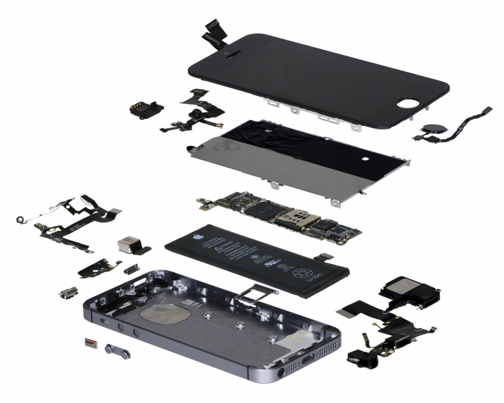

Не секрет, что современные мобильные телефоны не предназначены для длительной работы или апгрейда. То есть технически они могли бы работать и 10, и 20 лет, но владельца 10-летнего телефона окружающие просто будут считать очень странным человеком. Обновление операционной системы происходит довольно часто, также как и выпуск новых моделей аппаратов. В результате, телефоны морально устаревают, а через несколько лет начинают даже «тормозить» на новых версиях ОС. Телефоны iPhone — не исключение.

Компания Apple добавила секцию вопросов и ответов в разделе «Охрана окружающей среды» на официальном сайте, где впервые раскрыла ожидаемый срок жизни своей техники. Итак, телефонам iPhone, планшетам iPad и часам Apple Watch отведён трёхлетний срок жизни, компьютерам Mac — четыре года.
Указанные сроки жизни рассчитаны при условии, что клиент впервые покупает технику Apple. Можно предположить, что для «постоянных клиентов» эти сроки меньше, то есть человек будет обновлять телефон чаще, чем раз в три года.
| Table header 1 | Table header 2 |
| Some data | Some data |
| Some data | Some data |
| Some data | Some data |